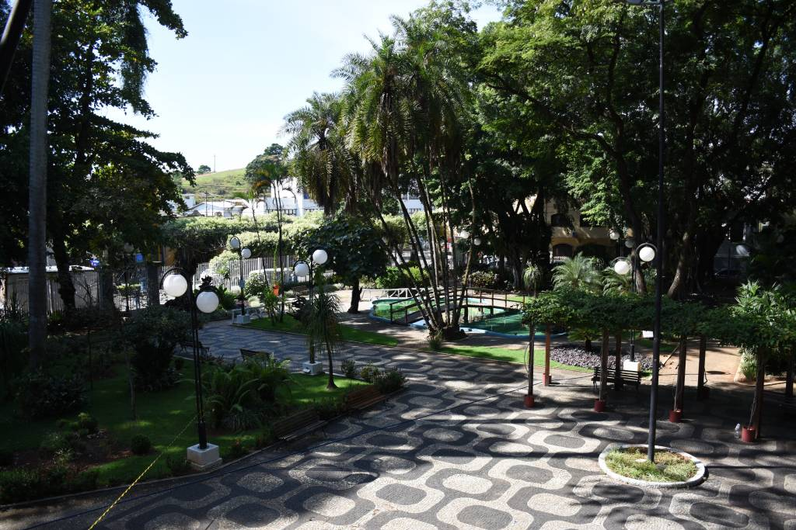
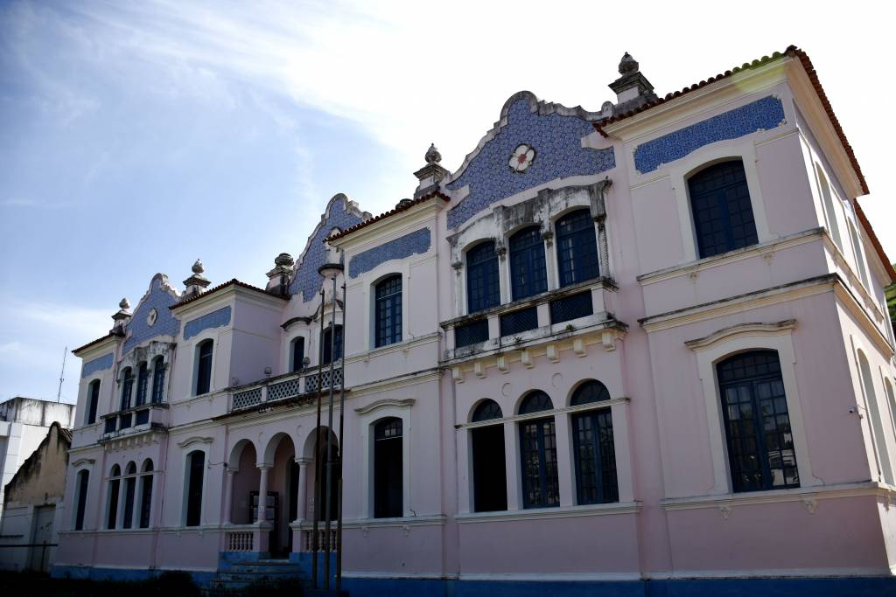
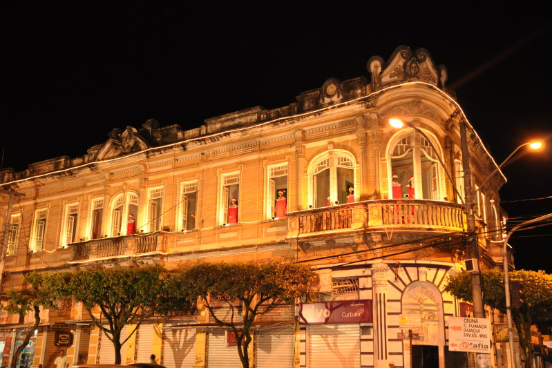

Praça Municipal de Alegre

Em 1924 assumia mandato como prefeito Sr. Vicente Caetano, iniciando o aterro do brejo que existia no local em 1925,
fazendo o alicerce da futura Prefeitura Municipal, além do jardim que seria o primeiro da cidade.
Foi somente em 1934, governo de Messias Chaves, que as instalações passaram para o prédio já concluído.
As características originais foram remodeladas na década de 80. Anteriormente, a Prefeitura Municipal funcionou no Largo Municipal,
hoje Praça Rui Barbosa, e na Rua XV de Novembro.
clique aqui para mais informações
EEEF Professor Lellise

É um neocolonial com preciosos azulejos portugueses no frontispício e Laterais, e em seu segundo piso o primeiro teatro
da cidade. A Escola de Ensino Fundamental Professor Lellis, antigo Grupo Escolar, foi inaugurada em 1931. Houve a contemplação
da estrutura e da instituição educacional. Local, qual foi tombado pelo Estado. A escola em tempos passados foi invadida por
tropas rebeladas contra o governo de kjWashington Luís, onde por um pequeno período tornou-se quartel militar.
clique aqui para mais informações
Solar Miguel Simão

A excessiva ornamentação do art-noveou está presente no frontão deste palacete inaugurado em 1927. Pertencia ao libanês Miguel Simão,
que utilizava o andar superior para moradia com sua família e no andar inferior funcionava sua casa comercial de café. Os tetos e as
paredes dos salões são cobertos com pinturas, muitas delas reproduzidas geometricamente no paquet do piso.
Atualmente abriga lojas e bares em pleno funcionamento no andar inferior, seu estado de conservação compromete as características originais
de construção bem como, toda a estrutura interna
clique aqui para mais informações
| Alegre |
| População Estimada |
29.869 pessoas (2021) |
Fonte:
IBGE |
| Área Territorial |
756,860 km² |
| IDH |
0,721 |
| PIB |
R$476.962,31 |
| PIB per capita |
R$15.854,35 |